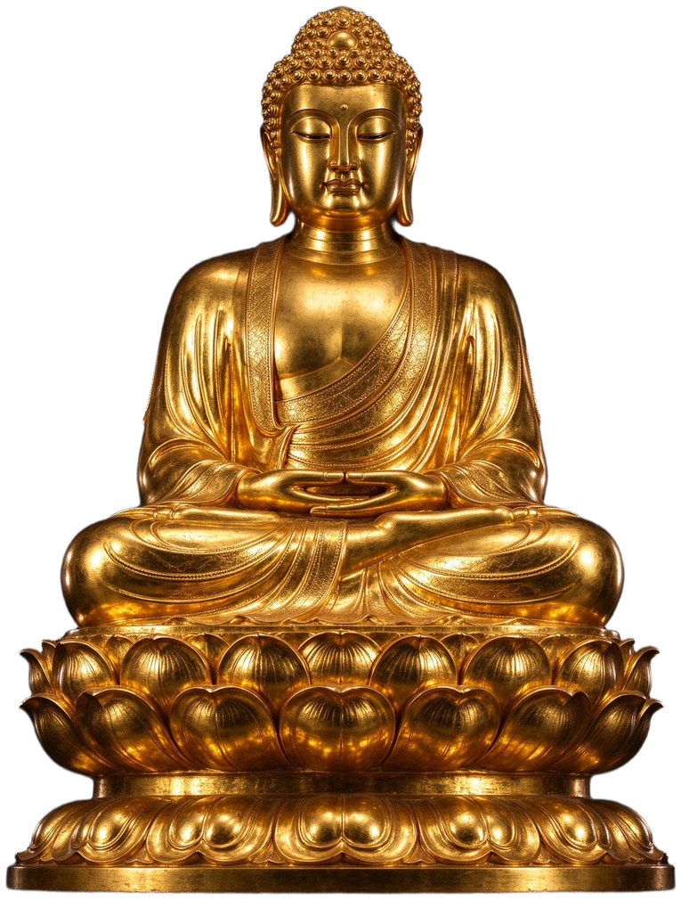
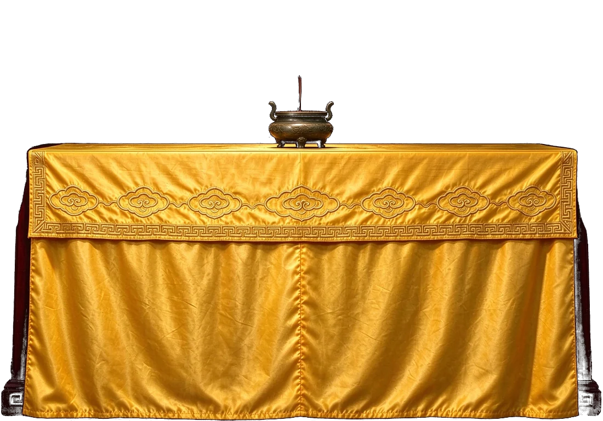
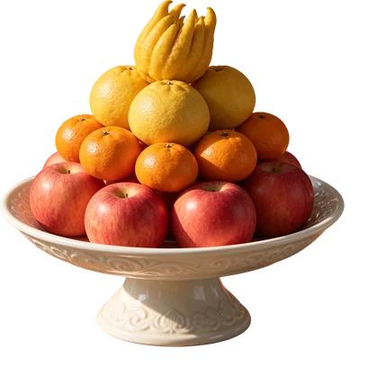
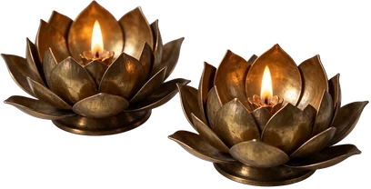
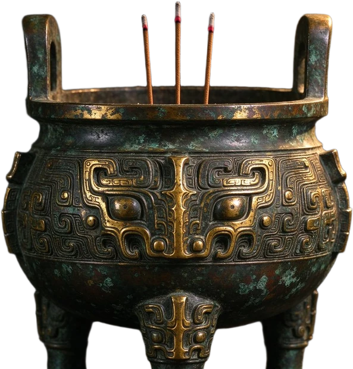
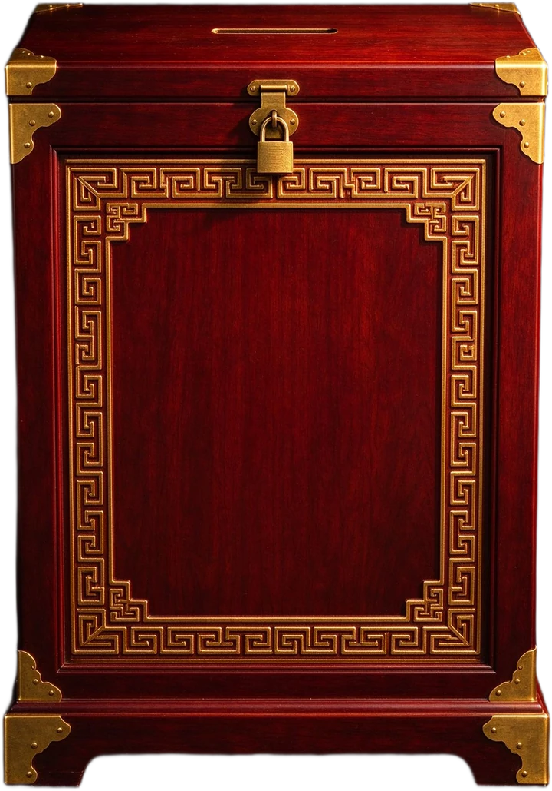

功德箱Merit Box
恭迎善信
Welcome, devotee自 远方 而来
From afar佛光普照 六时吉祥
Buddha's light shines · auspicious through the six periods莲台端坐 · 万籁俱寂
香云缭绕 一炷心香
亥时 · 人定Hour of the Boar · Rest
03:00
一炷香 · 静坐One stick of incense
诵持之典｜三经一咒 · 三藏全文
大悲咒为梵音音译，字句即音，不必求解；诵时心口如一，句间稍作停顿。Chanted in transcribed Sanskrit; recite evenly, pausing slightly between lines.
注音依汉传常诵读法标注，凡同字异读者（佛、阇、伽、般、若、啰、咄）已逐字校正；拼音只作助读，非梵文转写。Pinyin follows the common Chinese chanting reading; where one character carries several readings, the customary one is used. It is a reading aid, not a Sanskrit transliteration.
录文据 CBETA《大正藏》电子佛典，标点一仍其旧，校勘从略。Text per the CBETA Taisho edition; punctuation kept, apparatus omitted.
中文《大藏经》所收典籍数以千计，梵文、巴利文写本更是浩如烟海。此处按三藏、十二部经、 阅读路径与书目四层排开，收三十二部全文，皆可直接读毕，只为给初学指一条不必迷路的入口。 A thousand scriptures sit in the Chinese canon, and more in Sanskrit and Pali. What follows sorts them by three baskets, twelve genres, reading routes and a shelf of thirty complete texts, picked from the whole canon.
三藏TRIPIṬAKA · THE THREE BASKETS
佛陀亲口宣说，多以「如是我闻」开篇；场合、听众各别，长短深浅不一。
戒条与僧团规约，每条都带着制戒的因缘故事，是教团能立千年的骨架。
弟子与祖师的系统阐释，把经中的义理拆解、编排、论证成可修可证的次第。
十二部经TWELVE GENRES · DVĀDAŚĀṄGA
散文体的长行教导。
以偈颂重述长行之义。
授记弟子何日成佛。
纯偈颂体，不伴长行。
无问自说，感兴而发。
说法与制戒的缘起故事。
以喻明理，令义可触。
弟子前世的行迹。
佛陀因地修行的故事。
广大深奥的大乘教法。
不可思议的神变事迹。
问答往复，抉择法义。
阅读路径READING ROUTES · 由浅入深
书目SHELF · 三十二部全文
佛教故事STORIES · 譬喻 本生 因缘 禅门 廿九则
佛经里最动人的部分常常不是义理，而是故事：一个愚人、一只鸟、一盏灯，便把道理说尽了。 此处取譬喻、本生、因缘与禅门四类共二十九则，点开即读，文末一句所喻。 The most moving part of the canon is often its stories. Twenty-nine of them here — parables, past lives, causes and Chan encounters. Tap a card to open it.
故事多出《百喻经》《杂宝藏经》《贤愚经》《大智度论》《景德传灯录》，原文为文言，此处以白话简写；欲读原典，可往藏经取全文。Paraphrased from the Chinese canon; the full texts sit in the Canon room.
读经四要FOUR WAYS TO READ
读前洗手、端坐。经不是闲书，是法的载体。Wash, sit straight: this is not casual reading.
第一遍不懂不要紧，读多了，义理自己会开。Read it again; meaning opens with repetition.
读到哪个法门，就去试哪个法门。Put into practice whatever practice you meet.
不懂处查古德注疏，最终仍要自己证得。Consult the ancients, then verify it yourself.
日日不辍｜一日一记
满一百零八即为一串、一百零八遍圆满
A full rosary is one hundred and eight
诸恶莫作，众善奉行，自净其意，是诸佛教。
DO NO EVIL・PRACTISE WHAT IS GOOD・PURIFY THE MIND・THIS IS THE TEACHING OF ALL BUDDHAS功课毕，可念一段回向：愿以此功德，普及于一切，我等与众生，皆共成佛道。
May this merit be shared with all beings; may we together awaken.
入殿之礼｜四事问答
取香一枝，双手平举至眉齐，默念所愿；插香时不必用力，香与香之间留一指宽。一枝即可，不必求多。
花、果、清水为上，取其清净；供毕可自受用，不弃不焚。供品以心意为主，不在贵重。
双掌相合于胸前，脊背自然直立，躬身约三十度为一问讯；起身时缓慢，不与旁人说笑。
由信而解｜由解而行
学佛不是一步登天，多是一段一段走。下面五阶只是常行的次序，不是考级；勾一项，只是给自己留个记号。Study is walked in stages, not climbed in one leap. These five are a common order, not a ladder of grades — a tick is only a mark for yourself.
0 / 15已行 · done
一
二
三
四
五
勾选只记在这台电脑的浏览器里，不进云端、不发他人；欲知经论原意，仍以经本与善知识为准。
Ticks are kept in this browser only, never uploaded or shared. For the deeper meaning, rely on the scriptures and a good teacher.
殿宇之制｜称谓与结缘
汉传寺院中轴多以山门、天王殿、大雄宝殿、法堂、藏经楼依次排开，两侧配钟鼓楼、伽蓝殿、祖师殿。大雄宝殿为主殿，「大雄」意为能降伏烦恼的勇士，殿内主尊多为释迦牟尼佛。
主流布局：山门 → 天王殿 → 大雄宝殿 → 法堂。
佛像多结跏趺坐于莲台：莲表清净，出淤泥而不染；手结定印或触地印，表禅定与觉悟。两侧常立胁侍，或供观音、文殊、普贤、地藏四大菩萨。
金身非为华美，取「金」之不变不坏，表法身常住。
钟、鼓、磬、木鱼、香炉、烛台、幡帐，各有其用：钟表警醒昏沉，磬表清净，香表戒定之德。供桌上的香、花、灯、涂、果、茶、食、宝、珠、衣，称为「十供养」。
供具不在多，在常清洁、常恭敬。
页面所写为汉传佛教通行的殿堂形制与称谓常识，不指某一具体寺院；礼佛细节以当地寺院的规矩为准。
These notes describe common Chinese Buddhist conventions, not any particular temple.
缘起 · 联络Colophon & Contact
优婆塞 SongUpasaka Song
hereok@msn.com
此页由优婆塞 Song 一手搭起，若有讹误或想说的话，写信即可。
Built and kept by Upasaka Song — corrections and a kind word are welcome.
性质非营利个人道场：不募捐、不售卖、不投放广告，也不设账号与会员。
随喜纯出自愿，非交易、非凭证、无对价；款项只补服务器与素材开销。
数据除供养页收款码外，不收姓名与联系方式，不写 cookie、不做广告追踪；功课、供灯、回向仅存本机浏览器。
问候城市与到访次数经第三方匿名接口取城市级归属地并计数，不存 IP、不建档案；拦截跨站请求即不显示。
A NON-PROFIT PERSONAL SHRINE — no fundraising, sales, ads or accounts. Offerings are voluntary, never a transaction or a receipt. Apart from the offering QR codes, no personal data is collected: no cookies, no ad tracking, and practice logs stay in your own browser. The greeting city and visit count come from anonymous third-party endpoints — city level only, no IP stored; block cross-site requests and they are simply omitted.灯花净水｜存于本机
灯墙只存于本机浏览器：点一盏即现，吹熄即隐，换设备即空。The wall lives in this browser — light one and it appears, blow it out and it goes.
「诸供养中，法供养最。」
《华严经 · 普贤行愿品》 Of all offerings, the offering of the Dharma is the highest. — Avataṃsaka Sūtra财施养色身，法施养慧命。供灯、供花、供水，都是借物摄心；把经读进去、把道理行出来，才是第一等供养。殿内这只功德箱只为长年运维的一笔小费，不是门票，不是服务，也无任何对价。
金额随意，一分也是心意；不供亦可，读经才是本愿。本站为非营利个人道场，随喜不构成交易、不开票据、无任何对价；扫码即转到支付页，本站不经手、不留存任何款项信息。
可长按选中复制 · long-press to copy
本站为免费分享页面，无任何付费服务，亦不售卖任何物品。资助仅用于域名年费、服务器与图文素材更新，完全自愿，不作任何承诺与对价。This site is free and sells nothing. Contributions are voluntary and cover domain, hosting and image upkeep only.
灯火花水只存在这台电脑的浏览器里，换设备、清缓存就会散去；不为他人所见，也无人代你守护。
Offerings are kept in this browser only; they are not shared or transmitted.
朔望斋期｜圣诞将至
—
—
— ——
历法依浏览器内置中国农历换算（Intl chinese calendar），不作择吉、不作预言。斋期按汉传丛林通行的六斋日：初八、十四、十五、廿三、廿九、三十。
Lunar dates are computed with the built-in Chinese calendar; no divination is offered.
遍搜全殿｜经句与问答
检索范围：三十二部经全文（约五十二万字节录）、诵持三经、功课与仪轨问答、寺院称谓、历数圣诞；下方名相为常用术语浅释，一句一条，不作定解。
Searches the sutra texts, the Q&A pages, temple notes and observances. The glossary below gives one-line notes on common terms, not definitive definitions.
长按识别，或截图后扫 · long-press to recognise, or screenshot and scan
长按识别，或截图后扫 · long-press to recognise, or screenshot and scan
本站为免费理念分享页面，无任何付费服务。长期线上展示需要持续承担域名年费、海外服务器租赁、图文素材更新等固定成本。如您认可本站，可自愿小额资助站点日常运维，所有资助完全自愿，感谢您的馈赠。This site is a free sharing space with no paid services. Keeping it online long term means steady fixed costs — domain renewal, overseas hosting, and the ongoing refresh of images and texts. If you find it worthwhile, you may make a small voluntary contribution towards its upkeep. All support is entirely voluntary; thank you for your kindness.此页由优婆塞 Song 维护 · Kept by Upasaka Song ｜ hereok@msn.com
轻触任意处关闭Tap anywhere to close
第 一 签
上吉MOST FAVOURABLE
心诚则灵Sincerity is what answers
轻触任意处收起Tap anywhere to close
描红抄经TRACING COPY
大悲咒